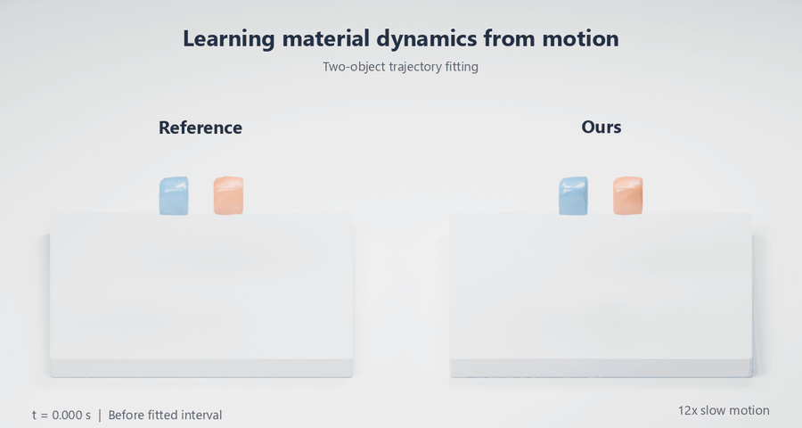

|
Zhewen Zheng I am a Master's student in Computer Vision (MSCV) at Carnegie Mellon University, graduating in December 2026. I am interested in how intelligent systems perceive their surroundings, anticipate how the world changes, and use that understanding to guide action. My work brings together 3D vision and physical modeling to study dynamic scenes and human-object interaction. I hold a B.S. in Informatics and a B.A. in Mathematics from the University of Washington, where I graduated with Interdisciplinary Honors. At CMU, I work on physical modeling with Dr. Yizhou Zhao and Prof. Laszlo Jeni, and on 4D reconstruction of human-clay interaction with Prof. Kris Kitani. Previously, I worked on online 3D reconstruction at Shanghai AI Laboratory, contributing to ARTDECO (ICLR 2026), and was a Machine Learning Engineer at ObvioHealth. |

|
ResearchI am interested in learning representations of the physical world that connect perception with prediction and interaction. My current research approaches these questions through 3D/4D reconstruction and differentiable simulation, recovering geometry and motion from visual observations and inferring material behavior from how objects move and deform. |
|
 |
PhysON: 4D Physical Understanding Carnegie Mellon University · June 2026 – Present Advisors: Dr. Yizhou Zhao and Prof. Laszlo Jeni I designed a two-stage physical modeling pipeline that combines neural model pretraining and differentiable per-scene fitting to infer material behavior from 3D motion, for future physical AI applications. I generated synthetic trajectories in Genesis spanning elastic, plastic, granular, and viscous behavior in single- and multi-object scenes with uniform or mixed materials. Through architecture and supervision ablations, I identified a loading-history limitation in the simulator's sand model: identical deformations can produce different responses depending on prior loading. |
|
Clay4D: 4D Reconstruction of Human-Clay Interaction Carnegie Mellon University · December 2025 – Present Advisor: Prof. Kris Kitani Clay4D includes 165 human-clay interaction sequences totaling 2.55 hours of capture and approximately 3.25 million frames across 16 static GoPros and one egocentric camera. I implemented multi-view 3D pose estimation and body and hand mesh reconstruction using RANSAC triangulation and PyMomentum fitting, combining SAM-3D-Body and WiLoR estimates. I am annotating full-body human-clay interaction and adapting 3D Gaussian splatting to reconstruct deforming clay under occlusion from calibrated multi-view videos. |
|

|
ARTDECO: Towards Efficient and High-Fidelity On-the-Fly 3D Reconstruction
with Structured Scene Representation
Guanghao Li, Kerui Ren, Linning Xu, Zhewen Zheng, Changjian Jiang, Xin Gao, Bo Dai, Jian Pu, Mulin Yu, Jiangmiao Pang ICLR, 2026 project page / arXiv / code Online 3D reconstruction from monocular video using structured scene representations and 3D foundation priors. I built the tracking-to-mapping interface, propagated camera pose updates to Gaussian splats, implemented frame selection separating geometry insertion from refinement, and contributed to benchmark evaluation. |
{kind=link}
Education |

|
Carnegie Mellon University, Pittsburgh, PA M.S. in Computer Vision, expected Dec 2026 GPA: 4.0/4.0 Relevant Coursework: Advanced Computer Vision, Learning for 3D Vision, Robot Learning |

|
University of Washington, Seattle, WA B.S. in Informatics and B.A. in Mathematics, May 2022 Graduated with Interdisciplinary Honors (GPA: 3.75/4.00) Relevant Coursework: Machine Learning, Computer Vision, Algorithms, Data Structures, Linear Algebra, Multivariable Calculus, Probability and Statistics, Numerical Analysis |
Work |

|
Shanghai AI Laboratory, Shanghai, China Research Assistant, Feb 2024 - Aug 2025 Online 3D reconstruction with Gaussian splatting; co-author of ARTDECO (ICLR 2026). |

|
ObvioHealth, Remote, Seattle, WA Machine Learning Engineer, Aug 2022 - June 2023 Built a synthetic-data pipeline with Instant-NGP and Blender for segmentation model training. Led a five-person team integrating LLMs into a clinical protocol drafting portal; interviews with medical writers suggested it could reduce drafting time from approximately one week to 1–2 days. |
MiscellaneaI enjoy playing badminton, building computers, linux-ricing, and figuring out automation puzzles. |
|
Template stolen from Jon Barron. |